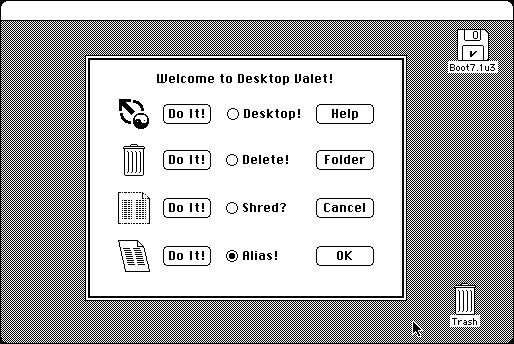

Download
desktop-valet.zip (12K) Desktop Valet 3.0.1 repackaged into a zipped hfs disk image and checksum file. The disk image can be mounted with Mini vMac.
desktop-valet.hqx (12K) Desktop Valet 3.0.1 in the original format.
copyright: Michael Love
mod date: Apr 11, 1994
license: freeware
from url :
proclus realm
“This utility will move, delete, shred or make aliases of files that are dropped on it.” “System 7 dependent”.

If you find these downloads useful, please consider helping the Gryphel Project, which hosts them.
Here are the md5 checksums for the downloads, signed with Gryphel Key 5:
--------- GRY SIGNED TEXT --------- c87e036b15505c56f512d644fde5bac3 desktop-valet.zip f858fafaabe1f1c0d6de7ad6181ef4d5 desktop-valet.hqx ------- BEGIN GRY SIGNATURE ------- Gry/4Xa8CFcUzxdN/OkZHsJyc2haQp/q4VufLS3c8kQlwTaipcqTg7DuUbFBuSkb tpXo7VP8xyfYJnx9zzCU6nVauJdsekbjranlndYKtlFg8O4xveXEVzmKx8wPJUl5 80xlRrL0m1fmU1jMoZcbBmBHOwLA2LlAqTt7LppmQqhNL7pCw9k1frOGrroKhpOu -------- END GRY SIGNATURE --------